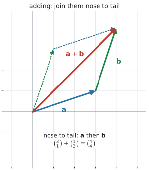
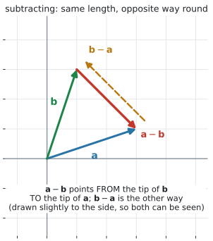
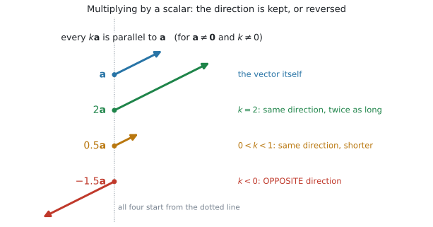

AHL 3.10a — Vectors: the basics（ベクトルの基本）
- vector（ベクトル）と scalar（スカラー）のちがいを、例を挙げて説明できる。
- ベクトルを directed line segment（有向線分）でかき、成分を読み取れる。
- 同じベクトルを、列ベクトルと \(\mathbf{i}\)、\(\mathbf{j}\)、\(\mathbf{k}\) の \(2\) 通りで書ける。
- ベクトルの和と差を、図でも成分でも求められる。
- scalar multiple（スカラー倍）\(k\mathbf{v}\) を求め、\(\mathbf{v}\) と平行であることを説明できる。
- \(2\) つのベクトルが平行かどうかを判定し、\(\mathbf{a} = k\mathbf{b}\) の \(k\) を求められる。
- zero vector（零ベクトル）\(\mathbf{0}\) と \(-\mathbf{v}\) が何を表すかを言える。
- \(3\) 次元でも、成分が \(1\) つ増えるだけで同じ計算ができる。
\(1\) 行だけです。 ベクトルの大きさの式です。
\[ \lvert \mathbf{v} \rvert = \sqrt{v_1^{\,2} + v_2^{\,2} + v_3^{\,2}}, \qquad \mathbf{v} = \begin{pmatrix} v_1 \\ v_2 \\ v_3 \end{pmatrix} \tag{1}\]
このページで扱うこと——成分の書き方、和と差、スカラー倍——は、公式集にありません。 覚える式というより、書き方の約束だからです。約束を \(1\) 度のみこめば、あとは足し算と掛け算だけです。
The idea
1. vector は「大きさ」と「向き」の \(2\) つを持ちます
scalar（スカラー）は数だけのものです。vector（ベクトル）は数と向きの両方を持つものです。
| scalar（数だけ） | vector（数と向き） |
|---|---|
| 距離 \(5\) km | 変位 「北へ \(5\) km」 |
| speed（速さ）\(60\) km/h | velocity（速度）「東へ \(60\) km/h」 |
| 質量 \(3\) kg | force（力）「下向きに \(30\) N」 |
| 時間 \(2\) 時間 | — |
表 1 の右の列は、どれも「どちら向きか」を言わないと決まりません。「\(5\) km 歩いた」だけでは、どこにいるか分かりません。 向きが要ります。これがベクトルを使う理由です。
日本語ではどちらも「速さ／速度」と訳せてしまいますが、英語では区別します。
- speed … scalar。数だけ。 \(60\) km/h
- velocity … vector。数と向き。 「東へ \(60\) km/h」
同じように distance（道のり、scalar）と displacement（変位、vector）も別です。AHL 5.13 で \(1\) 次元の場合を扱いました。このページは、それを平面と空間に広げます。
2. 有向線分でかきます
ベクトルは矢印でかきます。これを directed line segment（有向線分）といいます。
- 矢印の長さ … 大きさ
- 矢印の向き … 向き
点 \(A\) から点 \(B\) へ向かうベクトルを \(\overrightarrow{AB}\) と書きます。
印刷では、ベクトルは太字で \(\mathbf{v}\) と書かれます。しかし手書きで太字は書けません。
答案では、次のどちらかにします。
\[ \underline{v} \qquad \text{または} \qquad \overrightarrow{v} \]
ふつうの \(v\) のまま書くと、スカラーと区別が付きません。 採点者に、スカラーの計算をしているように読まれかねません。
3. 成分で書きます — 列ベクトルと \(\mathbf{i}\)、\(\mathbf{j}\)、\(\mathbf{k}\)
矢印だけでは計算できないので、数の組にします。

図 1 の (a) を見てください。\(A\) から \(B\) へは、右に \(4\)、上に \(3\) 進みます。ですから
\[ \overrightarrow{AB} = \begin{pmatrix} 4 \\ 3 \end{pmatrix} = 4\mathbf{i} + 3\mathbf{j} \tag{2}\]
同じものを \(2\) 通りに書いただけです。
- column representation（列ベクトル）… 縦に並べます。計算はこちらが速いです
- \(\mathbf{i}\)、\(\mathbf{j}\)、\(\mathbf{k}\) を使う形 … 問題文はこちらで来ることもあります
\(\mathbf{i}\)、\(\mathbf{j}\)、\(\mathbf{k}\) を base vectors（基本ベクトル）といいます。
\(2\) 次元では、\(2\) つです。
\[ \mathbf{i} = \begin{pmatrix} 1 \\ 0 \end{pmatrix}, \qquad \mathbf{j} = \begin{pmatrix} 0 \\ 1 \end{pmatrix} \tag{3}\]
\(3\) 次元では、成分が \(1\) つ増えて \(3\) つになります。
\[ \mathbf{i} = \begin{pmatrix} 1 \\ 0 \\ 0 \end{pmatrix}, \qquad \mathbf{j} = \begin{pmatrix} 0 \\ 1 \\ 0 \end{pmatrix}, \qquad \mathbf{k} = \begin{pmatrix} 0 \\ 0 \\ 1 \end{pmatrix} \tag{4}\]
それぞれ、各軸の向きに長さ \(1\) だけ進むベクトルです。\(4\mathbf{i} + 3\mathbf{j}\) は「\(\mathbf{i}\) の向きに \(4\)、\(\mathbf{j}\) の向きに \(3\)」という意味で、式 3 を入れれば 式 2 の列ベクトルとまったく同じものになります。
このページでは、列ベクトルを主に使います。 ただし、初めて出す例には \(\mathbf{i}\)、\(\mathbf{j}\)、\(\mathbf{k}\) の形も並べます。問題文がどちらで来ても読めるようにしておいてください。
4. 同じベクトルは、どこに置いても同じです
図 1 の (b) の \(4\) 本の矢印は、すべて同じベクトル \(\begin{pmatrix} 4 \\ 3 \end{pmatrix}\)です。(a) の \(\overrightarrow{AB}\) と同じものを、\(4\) か所に置いてみただけです。
ベクトルが持っているのは、大きさと向きだけです。どこから出発したかは、ベクトルの一部ではありません。
\[ \text{成分が同じ} \quad \Longleftrightarrow \quad \text{同じベクトル} \]
これは便利な性質です。足し算をするときに、矢印を平行移動して好きな位置に置けるからです（第5節）。
点 \((4,\ 3)\) と、ベクトル \(\begin{pmatrix} 4 \\ 3 \end{pmatrix}\) は、書き方が似ていますが別のものです。
- 点 … 平面の \(1\) か所を指します。動かせません
- ベクトル … 「右に \(4\)、上に \(3\)」という動き方を表します。どこから始めてもよい
\(2\) つをつなぐのが position vector（位置ベクトル）で、AHL 3.10b で扱います。
5. 足し算 — 矢印をつなぐ、成分を足す

幾何の見方（図 2）。\(\mathbf{a}\) の矢印の先に \(\mathbf{b}\) の矢印の根元をつなぎます。出発点から到着点までを結んだものが \(\mathbf{a}+\mathbf{b}\) です。これを nose to tail（先端と根元をつなぐ）といいます。
代数の見方。 成分どうしを足すだけです。
\[ \begin{pmatrix} a_1 \\ a_2 \end{pmatrix} + \begin{pmatrix} b_1 \\ b_2 \end{pmatrix} = \begin{pmatrix} a_1+b_1 \\ a_2+b_2 \end{pmatrix} \tag{5}\]
図の例では
\[ \begin{pmatrix} 3 \\ 1 \end{pmatrix} + \begin{pmatrix} 1 \\ 3 \end{pmatrix} = \begin{pmatrix} 4 \\ 4 \end{pmatrix} \]
\(2\) つの見方は、同じことを言っています。 「右に \(3\)、上に \(1\)」のあと「右に \(1\)、上に \(3\)」と進めば、横は \(3+1\)、縦は \(1+3\) です。横の動きと縦の動きは、互いに影響しません。
図 2 の点線に注目してください。\(\mathbf{b}\) を先に進んでから \(\mathbf{a}\) を進んでも、同じ場所に着きます。
\[ \mathbf{a}+\mathbf{b} = \mathbf{b}+\mathbf{a} \]
できる図が平行四辺形になるので、これを parallelogram rule（平行四辺形の法則）ともいいます。
6. 引き算 — \(\mathbf{a}-\mathbf{b}\) は \(\mathbf{a} + (-\mathbf{b})\) です
成分では、引くだけです。
\[ \begin{pmatrix} a_1 \\ a_2 \end{pmatrix} - \begin{pmatrix} b_1 \\ b_2 \end{pmatrix} = \begin{pmatrix} a_1-b_1 \\ a_2-b_2 \end{pmatrix} \tag{6}\]

図で見ると、向きが大事です。 図 3 で、\(\mathbf{a}\) と \(\mathbf{b}\) を同じ点から出したとき
- \(\mathbf{a}-\mathbf{b}\) … \(\mathbf{b}\) の先から \(\mathbf{a}\) の先へ向かう矢印
- \(\mathbf{b}-\mathbf{a}\) … その逆向き
\(2\) つは長さが同じで、向きが正反対です。
\[ \mathbf{b}-\mathbf{a} = -(\mathbf{a}-\mathbf{b}) \]
足し算とちがって、引き算は順序で答えが変わります。
\(\mathbf{a} = \begin{pmatrix} 3 \\ 1 \end{pmatrix}\)、\(\mathbf{b} = \begin{pmatrix} 1 \\ 3 \end{pmatrix}\) なら
\[ \mathbf{a}-\mathbf{b} = \begin{pmatrix} 2 \\ -2 \end{pmatrix}, \qquad \mathbf{b}-\mathbf{a} = \begin{pmatrix} -2 \\ 2 \end{pmatrix} \]
覚え方は「先から先へ」です。 \(\mathbf{a}-\mathbf{b}\) は「\(\mathbf{b}\) から \(\mathbf{a}\) へ」。引かれるほうが行き先です。
この向きの取りちがえは、AHL 3.10b の \(\overrightarrow{AB} = \mathbf{b}-\mathbf{a}\) でも、AHL 3.12a の相対位置でも、そのまま効いてきます。
7. スカラー倍と、平行
数を \(1\) つ掛けるのが scalar multiple です。成分すべてに掛けます。
\[ k\begin{pmatrix} a_1 \\ a_2 \end{pmatrix} = \begin{pmatrix} ka_1 \\ ka_2 \end{pmatrix} \tag{7}\]

図 4 のとおり、長さは \(\lvert k \rvert\) 倍になり、向きは \(k\) の符号で決まります（\(k \neq 0\) のとき）。
| \(k\) | 向き | 長さ |
|---|---|---|
| \(k > 1\) | \(\mathbf{a}\) と同じ | 長くなる |
| \(k = 1\) | \(\mathbf{a}\) と同じ | 変わらない |
| \(0 < k < 1\) | \(\mathbf{a}\) と同じ | 短くなる |
| \(k < 0\) | \(\mathbf{a}\) と逆 | \(\lvert k \rvert\) 倍 |
| \(k = 0\) | 向きがなくなる | \(0\) になる（第8節） |
ここから、平行の判定が出ます。\(\mathbf{a} \neq \mathbf{0}\)、\(\mathbf{b} \neq \mathbf{0}\) のとき、次が成り立ちます。
\[ \mathbf{a} \ \text{と} \ \mathbf{b} \ \text{が平行} \quad \Longleftrightarrow \quad \mathbf{a} = k\mathbf{b} \ \text{となる数} \ k \ \text{がある} \tag{8}\]
8. 零ベクトルと \(-\mathbf{v}\)
zero vector（零ベクトル）\(\mathbf{0}\) は、成分がすべて \(0\) のベクトルです。
\[ \mathbf{0} = \begin{pmatrix} 0 \\ 0 \end{pmatrix} \]
「動かない」を表します。長さが \(0\) なので、向きがありません。 これが \(\mathbf{0}\) だけの特別なところです。
「\(\mathbf{0}\) はすべてのベクトルと平行」とする流儀もありますが、AI HL でそこを問われることはありません。
\(-\mathbf{v}\) は、\(\mathbf{v}\) に \(k = -1\) を掛けたものです。
\[ -\begin{pmatrix} 3 \\ -5 \end{pmatrix} = \begin{pmatrix} -3 \\ 5 \end{pmatrix} \]
長さは同じで、向きが正反対です。図でいえば、矢印の頭と根元を入れかえたものです。
\[ \mathbf{v} + (-\mathbf{v}) = \mathbf{0}, \qquad \overrightarrow{BA} = -\overrightarrow{AB} \tag{9}\]
\(\mathbf{0}\) は太字で書きます。 数の \(0\) とは別のものだからです。
9. \(3\) 次元でも、成分が \(1\) つ増えるだけです
ここまで \(2\) 次元で書いてきましたが、\(3\) 次元でも規則は変わりません。
\[ \begin{pmatrix} 1 \\ -2 \\ 4 \end{pmatrix} + \begin{pmatrix} 3 \\ 0 \\ -1 \end{pmatrix} = \begin{pmatrix} 4 \\ -2 \\ 3 \end{pmatrix}, \qquad 2\begin{pmatrix} 1 \\ -2 \\ 4 \end{pmatrix} = \begin{pmatrix} 2 \\ -4 \\ 8 \end{pmatrix} \]
\(3\) つ目の成分は \(z\) 方向、つまり 式 4 の \(\mathbf{k}\) の向きです。
\[ \begin{pmatrix} 1 \\ -2 \\ 4 \end{pmatrix} = \mathbf{i} - 2\mathbf{j} + 4\mathbf{k} \]
平行の判定も同じです。\(3\) つの比がそろえば平行——ただし \(0\) の成分があるときは、第7節 と同じく \(\mathbf{a} = k\mathbf{b}\) を直に解きます。
図はかきにくくなりますが、計算は変わりません。 ここが列ベクトルの強みです。図が想像できなくても、成分で押していけます。
Worked examples
問題文は英語です。意味が理解できなかったら、問題文の下の「日本語訳」を開いてください。解説は日本語です。
例題 1 Let \(\mathbf{a} = \begin{pmatrix} 3 \\ -1 \end{pmatrix}\) and \(\mathbf{b} = \begin{pmatrix} 2 \\ 5 \end{pmatrix}\).
(a) Find \(\mathbf{a} + \mathbf{b}\).
(b) Find \(\mathbf{a} - \mathbf{b}\).
(c) Find \(2\mathbf{a} - 3\mathbf{b}\).
日本語訳
\(\mathbf{a} = \begin{pmatrix} 3 \\ -1 \end{pmatrix}\)、\(\mathbf{b} = \begin{pmatrix} 2 \\ 5 \end{pmatrix}\) とします。
(a) \(\mathbf{a} + \mathbf{b}\) を求めなさい。
(b) \(\mathbf{a} - \mathbf{b}\) を求めなさい。
(c) \(2\mathbf{a} - 3\mathbf{b}\) を求めなさい。
(a) 成分どうしを足します（式 5）。
\[ \mathbf{a}+\mathbf{b} = \begin{pmatrix} 3+2 \\ -1+5 \end{pmatrix} = \begin{pmatrix} 5 \\ 4 \end{pmatrix} \]
(b) 成分どうしを引きます（式 6）。\(-1 - 5\) の符号に注意してください。
\[ \mathbf{a}-\mathbf{b} = \begin{pmatrix} 3-2 \\ -1-5 \end{pmatrix} = \begin{pmatrix} 1 \\ -6 \end{pmatrix} \]
(c) 先にスカラー倍をしてから、引きます。
\[ 2\mathbf{a} = \begin{pmatrix} 6 \\ -2 \end{pmatrix}, \qquad 3\mathbf{b} = \begin{pmatrix} 6 \\ 15 \end{pmatrix} \]
\[ 2\mathbf{a}-3\mathbf{b} = \begin{pmatrix} 6-6 \\ -2-15 \end{pmatrix} = \begin{pmatrix} 0 \\ -17 \end{pmatrix} \]
検算。 (b) の答えを逆向きにすると \(\mathbf{b}-\mathbf{a}\) になるはずです。\(\begin{pmatrix} 2-3 \\ 5-(-1) \end{pmatrix} = \begin{pmatrix} -1 \\ 6 \end{pmatrix}\) で、たしかに \(\begin{pmatrix} 1 \\ -6 \end{pmatrix}\) の符号を変えたもの ✓（第6節）
- は、(a) の答えを使っても確かめられます。\(2\mathbf{a}-3\mathbf{b} = 2(\mathbf{a}+\mathbf{b}) - 5\mathbf{b} = \begin{pmatrix} 10 \\ 8 \end{pmatrix} - \begin{pmatrix} 10 \\ 25 \end{pmatrix} = \begin{pmatrix} 0 \\ -17 \end{pmatrix}\) ✓ 別の道でも同じ値になりました。
(a) \[\mathbf{a}+\mathbf{b} = \begin{pmatrix} 5 \\ 4 \end{pmatrix}\]
(b) \[\mathbf{a}-\mathbf{b} = \begin{pmatrix} 1 \\ -6 \end{pmatrix}\]
(c) \[2\mathbf{a}-3\mathbf{b} = \begin{pmatrix} 6 \\ -2 \end{pmatrix} - \begin{pmatrix} 6 \\ 15 \end{pmatrix} = \begin{pmatrix} 0 \\ -17 \end{pmatrix}\]
例題 2 Let \(\mathbf{p} = 4\mathbf{i} - \mathbf{j}\) and \(\mathbf{q} = -2\mathbf{i} + 3\mathbf{j}\).
(a) Find \(\mathbf{p} + \mathbf{q}\), giving your answer in the form \(a\mathbf{i} + b\mathbf{j}\).
(b) Find \(3\mathbf{p} - 2\mathbf{q}\), giving your answer as a column vector.
(c) Describe the vector \(-\mathbf{q}\) in relation to \(\mathbf{q}\).
日本語訳
\(\mathbf{p} = 4\mathbf{i} - \mathbf{j}\)、\(\mathbf{q} = -2\mathbf{i} + 3\mathbf{j}\) とします。
(a) \(\mathbf{p} + \mathbf{q}\) を求め、\(a\mathbf{i} + b\mathbf{j}\) の形で書きなさい。
(b) \(3\mathbf{p} - 2\mathbf{q}\) を求め、列ベクトルで書きなさい。
(c) \(\mathbf{q}\) との関係で、ベクトル \(-\mathbf{q}\) を述べなさい。
まず列ベクトルに直します。 そのほうが計算が速いからです（第3節）。
\[ \mathbf{p} = \begin{pmatrix} 4 \\ -1 \end{pmatrix}, \qquad \mathbf{q} = \begin{pmatrix} -2 \\ 3 \end{pmatrix} \]
\(4\mathbf{i} - \mathbf{j}\) の \(\mathbf{j}\) の係数は \(-1\) です。 何も書いていないので \(0\) ではありません。
(a) 足してから、\(\mathbf{i}\)、\(\mathbf{j}\) の形に戻します。問題文が指定した形で答えてください。
\[ \mathbf{p}+\mathbf{q} = \begin{pmatrix} 2 \\ 2 \end{pmatrix} = 2\mathbf{i} + 2\mathbf{j} \]
(b)
\[ 3\mathbf{p} = \begin{pmatrix} 12 \\ -3 \end{pmatrix}, \qquad 2\mathbf{q} = \begin{pmatrix} -4 \\ 6 \end{pmatrix} \]
\[ 3\mathbf{p}-2\mathbf{q} = \begin{pmatrix} 12-(-4) \\ -3-6 \end{pmatrix} = \begin{pmatrix} 16 \\ -9 \end{pmatrix} \]
\(12 - (-4) = 16\) です。 ここが、いちばん間違えるところです。
(c) Describe なので、言葉で答えます（第8節）。
試験ではこう書く
The vector \(-\mathbf{q}\) has the same magnitude as \(\mathbf{q}\) but points in the opposite direction. In components, \(-\mathbf{q} = 2\mathbf{i} - 3\mathbf{j}\), which is \(\mathbf{q}\) with the sign of each component reversed.
（ベクトル \(-\mathbf{q}\) は \(\mathbf{q}\) と大きさが同じで、向きが反対である。成分で書けば \(-\mathbf{q} = 2\mathbf{i} - 3\mathbf{j}\) で、\(\mathbf{q}\) の各成分の符号を変えたものである、という意味です。）
検算。 いちばん危ないのは (b) なので、そこを逆から見ます。\(3\mathbf{p}-2\mathbf{q}\) に \(2\mathbf{q}\) を足すと \(3\mathbf{p}\) に戻るはずです。\(\begin{pmatrix} 16 \\ -9 \end{pmatrix} + \begin{pmatrix} -4 \\ 6 \end{pmatrix} = \begin{pmatrix} 12 \\ -3 \end{pmatrix} = 3\mathbf{p}\) ✓ \(12-(-4)\) を \(8\) としていたら、ここで \(3\mathbf{p}\) に戻りません。
(a) \[\mathbf{p}+\mathbf{q} = 2\mathbf{i} + 2\mathbf{j}\]
(b) \[3\mathbf{p}-2\mathbf{q} = \begin{pmatrix} 12 \\ -3 \end{pmatrix} - \begin{pmatrix} -4 \\ 6 \end{pmatrix} = \begin{pmatrix} 16 \\ -9 \end{pmatrix}\]
(c) \(-\mathbf{q}\) has the same magnitude as \(\mathbf{q}\) but the opposite direction.
例題 3 Let \(\mathbf{a} = \begin{pmatrix} 6 \\ -4 \end{pmatrix}\) and \(\mathbf{b} = \begin{pmatrix} -9 \\ 6 \end{pmatrix}\).
(a) Show that \(\mathbf{a}\) and \(\mathbf{b}\) are parallel.
(b) Find the value of \(k\) such that \(\mathbf{a} = k\mathbf{b}\).
(c) State, with a reason, whether \(\mathbf{a}\) and \(\mathbf{b}\) point in the same direction.
日本語訳
\(\mathbf{a} = \begin{pmatrix} 6 \\ -4 \end{pmatrix}\)、\(\mathbf{b} = \begin{pmatrix} -9 \\ 6 \end{pmatrix}\) とします。
(a) \(\mathbf{a}\) と \(\mathbf{b}\) が平行であることを示しなさい。
(b) \(\mathbf{a} = k\mathbf{b}\) となる \(k\) の値を求めなさい。
(c) \(\mathbf{a}\) と \(\mathbf{b}\) が同じ向きかどうかを、理由とともに述べなさい。
(a) Show that なので、比が一致するところまで書きます（第7節）。
\[ \frac{6}{-9} = -\frac{2}{3}, \qquad \frac{-4}{6} = -\frac{2}{3} \]
\(2\) つの比が等しいので、\(\mathbf{a} = k\mathbf{b}\) となる \(k\) が存在します。したがって平行です。
(b) その \(k\) が、いま出た比です。
\[ k = -\frac{2}{3} \]
検算。 \(-\dfrac{2}{3}\begin{pmatrix} -9 \\ 6 \end{pmatrix} = \begin{pmatrix} 6 \\ -4 \end{pmatrix}\) ✓ \(\mathbf{a}\) に戻りました。
(c) State, with a reason なので、答えと理由の両方が要ります。
試験ではこう書く
No. Since \(k = -\dfrac{2}{3}\) is negative, \(\mathbf{a}\) is a negative multiple of \(\mathbf{b}\), so the two vectors are parallel but point in opposite directions.
（いいえ。\(k = -\dfrac{2}{3}\) は負なので、\(\mathbf{a}\) は \(\mathbf{b}\) の負の倍数である。したがって \(2\) つは平行だが、向きは反対である、という意味です。）
検算。 (a) で平行が言えているので、残るは向きだけです。\(\mathbf{a}\) は右下向き（\(+\)、\(-\)）、\(\mathbf{b}\) は左上向き（\(-\)、\(+\)）——平行なもの同士でこうなるのは \(k<0\) のときだけです ✓ (c) と合っています。（平行が言えていないうちに「符号が全部逆だから逆向き」とはできません。 \(\begin{pmatrix} 1 \\ -1 \end{pmatrix}\) と \(\begin{pmatrix} -1 \\ 5 \end{pmatrix}\) は符号が全部逆ですが、平行ですらありません。）
(a) \[\frac{6}{-9} = -\frac{2}{3} \quad \text{and} \quad \frac{-4}{6} = -\frac{2}{3}\] The ratios are equal, so \(\mathbf{a}\) is a scalar multiple of \(\mathbf{b}\) and the vectors are parallel.
(b) \[k = -\frac{2}{3}\]
(c) No: \(k\) is negative, so they are parallel but in opposite directions.
例題 4 A drone flies three legs, one after the other. Taking east and north as the positive directions, in metres the legs are
\[ \begin{pmatrix} 300 \\ 400 \end{pmatrix}, \qquad \begin{pmatrix} -100 \\ 250 \end{pmatrix}, \qquad \begin{pmatrix} 150 \\ -500 \end{pmatrix} \]
(a) Find the resultant displacement of the drone.
(b) Write down the vector the drone must fly to return directly to its starting point.
(c) Interpret your answer to part (a) in the context of the flight.
日本語訳
ドローンが \(3\) 本の行程を続けて飛びます。東と北を正の向きとして、各行程はメートル単位で上のとおりです。
(a) このドローンの resultant displacement（合成変位）を求めなさい。
(b) 出発点にまっすぐ戻るために飛ぶべきベクトルを書きなさい。
(c) (a) の答えを、この飛行の文脈で解釈しなさい。
(a) resultant は全部足したものでした（第5節）。
\[ \begin{pmatrix} 300 \\ 400 \end{pmatrix} + \begin{pmatrix} -100 \\ 250 \end{pmatrix} + \begin{pmatrix} 150 \\ -500 \end{pmatrix} = \begin{pmatrix} 300-100+150 \\ 400+250-500 \end{pmatrix} = \begin{pmatrix} 350 \\ 150 \end{pmatrix} \]
(b) 戻るには、いまの変位を打ち消せばよいので \(-\mathbf{v}\) です（式 9）。
\[ \begin{pmatrix} -350 \\ -150 \end{pmatrix} \]
(c) Interpret なので、ドローンの言葉で書きます。\(350\) は東向き、\(150\) は北向きの成分です。
試験ではこう書く
Although the drone flew three separate legs, its overall change in position is the same as flying \(350\) m east and \(150\) m north from the starting point. The path it actually took does not matter for the resultant: only where it started and where it finished.
（ドローンは \(3\) 本の行程を別々に飛んだが、位置の変化全体は、出発点から東へ \(350\) m、北へ \(150\) m 飛んだのと同じである。resultant にとって、実際にたどった経路は関係ない。出発点と到着点だけで決まる、という意味です。）
検算。 (a) を、足す順を変えて出し直します。足し算の順序は答えを変えないからです（第5節）。
\[ \begin{pmatrix} -100 \\ 250 \end{pmatrix} + \begin{pmatrix} 150 \\ -500 \end{pmatrix} = \begin{pmatrix} 50 \\ -250 \end{pmatrix}, \qquad \begin{pmatrix} 50 \\ -250 \end{pmatrix} + \begin{pmatrix} 300 \\ 400 \end{pmatrix} = \begin{pmatrix} 350 \\ 150 \end{pmatrix} \ ✓ \]
（(a) と (b) を足して \(\mathbf{0}\) になるのは検算になりません。 (b) は (a) の符号を変えただけなので、(a) が間違っていても \(\mathbf{0}\) になります。）なお 「出発点に戻る」＝「変位の合計が \(\mathbf{0}\)」です（第8節）。
(a) \[\begin{pmatrix} 300 \\ 400 \end{pmatrix} + \begin{pmatrix} -100 \\ 250 \end{pmatrix} + \begin{pmatrix} 150 \\ -500 \end{pmatrix} = \begin{pmatrix} 350 \\ 150 \end{pmatrix}\]
(b) \[\begin{pmatrix} -350 \\ -150 \end{pmatrix}\]
(c) The overall effect of the three legs is the same as a single flight of \(350\) m east and \(150\) m north.
Common errors
\(\mathbf{a}-\mathbf{b}\) と \(\mathbf{b}-\mathbf{a}\) は別のベクトルです。長さは同じですが、向きが正反対です（第6節）。
\[ \mathbf{a}-\mathbf{b} = \begin{pmatrix} 1 \\ -6 \end{pmatrix} \quad \text{に対して} \quad \mathbf{b}-\mathbf{a} = \begin{pmatrix} -1 \\ 6 \end{pmatrix} \]
引かれるほうが行き先です。\(\mathbf{a}-\mathbf{b}\) は「\(\mathbf{b}\) から \(\mathbf{a}\) へ」。
\(3\begin{pmatrix} 2 \\ -5 \end{pmatrix}\) を \(\begin{pmatrix} 6 \\ -5 \end{pmatrix}\) としてしまう誤りです。
すべての成分に掛けます（式 7）。正しくは \(\begin{pmatrix} 6 \\ -15 \end{pmatrix}\) です。
\(3\) 次元なら \(3\) つとも掛けます。書き写すときに \(1\) つ落とさないでください（演習 \(4\)、演習 \(10\)）。
\(4\mathbf{i} - \mathbf{j}\) の \(\mathbf{j}\) の係数は \(-1\) です。\(0\) ではありません。
\[ 4\mathbf{i} - \mathbf{j} = \begin{pmatrix} 4 \\ -1 \end{pmatrix} \]
同じように \(\mathbf{i} + 5\mathbf{k}\) は \(\begin{pmatrix} 1 \\ 0 \\ 5 \end{pmatrix}\) です。\(\mathbf{j}\) が無いところは \(0\)、\(\mathbf{i}\) だけのところは \(1\) です。
手書きでは太字が書けないので、\(\underline{v}\) または \(\overrightarrow{v}\) とします（第2節）。
下線のない \(v\) は、スカラーとして読まれます。 \(\mathbf{a}+\mathbf{b}\) を \(a+b\) と書いてしまうと、まったく別のことを言っていることになります。
\(\mathbf{0}\) も同じです。零ベクトルは太字（手書きなら下線）、数の \(0\) とは書き分けます。
Using your GDC (TI-Nspire CX II)
1. ベクトルは Matrix として入れます
TI-Nspire に「ベクトル」という入力はありません。行列（matrix）として入れます。 行数と列数を決めると、紙に書く列ベクトルと同じ形の空欄が出てくるので、そこに成分を入れます。
menu → Matrix & Vector → Create → Matrix...Number of rowsに \(2\)、Number of columnsに \(1\) を入れてOK- 出てきた空欄を、
tab（または▼）で移動しながら埋める
\[ \begin{bmatrix} 3 \\ -1 \end{bmatrix}, \qquad \begin{bmatrix} 2 \\ 5 \end{bmatrix} \]
\(3\) 次元なら、Number of rows を \(3\) にするだけです（第3節）。
そのまま足し算・引き算・スカラー倍ができます。
- \(\begin{bmatrix} 3 \\ -1 \end{bmatrix} + \begin{bmatrix} 2 \\ 5 \end{bmatrix}\)
- \(2 \times \begin{bmatrix} 3 \\ -1 \end{bmatrix} - 3 \times \begin{bmatrix} 2 \\ 5 \end{bmatrix}\)
\(\begin{pmatrix} 5 \\ 4 \end{pmatrix}\) と \(\begin{pmatrix} 0 \\ -17 \end{pmatrix}\) が返ります（例 1）。答えも列の形のまま返ります。
2. 名前を付けておくと、あとが楽です
同じベクトルを何度も使うので、変数に入れます。
- \(\begin{bmatrix} 3 \\ -1 \end{bmatrix} \ \to \ a\)
- \(\begin{bmatrix} 2 \\ 5 \end{bmatrix} \ \to \ b\)
矢印 → は、ctrl を押してから var です。sto というキーはありません（AHL 2.9a と同じです）。
そのあとは
- \(a+b\)
- \(2 \times a - 3 \times b\)
と打つだけです。打ち間違いが減ります。
a や b は、電卓が別の用途で使っていることがあります。うまくいかないときは、va、vb のような名前にしてください。
\(1\) つの問題が終わったら、変数を消しておくと安全です（menu → Actions → Clear a-z）。
3. \(3\) 次元も同じです
Number of rows を \(3\) にして、成分を \(1\) つ増やすだけです。
\[ \begin{bmatrix} 1 \\ -2 \\ 4 \end{bmatrix} + \begin{bmatrix} 3 \\ 0 \\ -1 \end{bmatrix} \]
\(\begin{pmatrix} 4 \\ -2 \\ 3 \end{pmatrix}\) が返ります（第9節）。\(2\) 次元と \(3\) 次元で、打ち方は変わりません。
4. 平行かどうかは、電卓では判定できません
「平行か」を答えてくれるコマンドはありません。 自分で比を見ます（第7節）。
ただし、\(k\) を見つけたあとの確認には使えます。
\(-\dfrac{2}{3} \times \begin{bmatrix}-9\\6\end{bmatrix}\)
\(\begin{pmatrix} 6 \\ -4 \end{pmatrix}\) が返れば、\(k\) が合っています（例 3）。
5. 検算のしかた
- 答えをもとの式に戻す。 \(k\) を出したら \(k\mathbf{b}\) を計算して \(\mathbf{a}\) に戻るか見る
- 引き算は、逆向きも出す。 \(\mathbf{a}-\mathbf{b}\) と \(\mathbf{b}-\mathbf{a}\) が符号だけ違うか見る（第6節）
- 足して \(\mathbf{0}\) になるはずのものは、実際に足す（例 4）
- 成分の符号を、図の向きと突き合わせる。 右上向きなら両方正、左下向きなら両方負
\(1\) つ目がいちばん強い検算です。もとに戻らなければ、どこかで間違えています。
Exercises
各問題に、折りたたみが \(3\) つ付いています。日本語訳、解答例（答案用紙に書くべきこと。英語です）、解説（なぜそうなるか。日本語です）。
まず自分で解いて、次に解答例と見くらべてください。解説は、合わなかったときだけ開けば十分です。
1 Let \(\mathbf{a} = \begin{pmatrix} 5 \\ 2 \end{pmatrix}\) and \(\mathbf{b} = \begin{pmatrix} -1 \\ 4 \end{pmatrix}\). Find \(\mathbf{a}+\mathbf{b}\) and \(\mathbf{a}-\mathbf{b}\).
日本語訳
\(\mathbf{a} = \begin{pmatrix} 5 \\ 2 \end{pmatrix}\)、\(\mathbf{b} = \begin{pmatrix} -1 \\ 4 \end{pmatrix}\) とします。\(\mathbf{a}+\mathbf{b}\) と \(\mathbf{a}-\mathbf{b}\) を求めなさい。
\[\mathbf{a}+\mathbf{b} = \begin{pmatrix} 4 \\ 6 \end{pmatrix}, \qquad \mathbf{a}-\mathbf{b} = \begin{pmatrix} 6 \\ -2 \end{pmatrix}\]
\(5+(-1) = 4\)、\(5-(-1) = 6\) です。引き算で \(-(-1) = +1\) になるところが要注意です。
検算。 \((\mathbf{a}+\mathbf{b})+(\mathbf{a}-\mathbf{b}) = 2\mathbf{a}\) になるはずです。\(\begin{pmatrix} 4 \\ 6 \end{pmatrix}+\begin{pmatrix} 6 \\ -2 \end{pmatrix} = \begin{pmatrix} 10 \\ 4 \end{pmatrix} = 2\mathbf{a}\) ✓ どちらか一方だけ間違えていたら、ここで合いません。
2 Let \(\mathbf{u} = 3\mathbf{i} + 7\mathbf{j}\) and \(\mathbf{v} = 2\mathbf{i} - 5\mathbf{j}\). Find \(\mathbf{u}+\mathbf{v}\) and \(4\mathbf{u}-\mathbf{v}\), giving each answer in the form \(a\mathbf{i}+b\mathbf{j}\).
日本語訳
\(\mathbf{u} = 3\mathbf{i} + 7\mathbf{j}\)、\(\mathbf{v} = 2\mathbf{i} - 5\mathbf{j}\) とします。\(\mathbf{u}+\mathbf{v}\) と \(4\mathbf{u}-\mathbf{v}\) を求め、それぞれ \(a\mathbf{i}+b\mathbf{j}\) の形で書きなさい。
\[\mathbf{u}+\mathbf{v} = 5\mathbf{i} + 2\mathbf{j}\]
\[4\mathbf{u}-\mathbf{v} = (12-2)\mathbf{i} + (28+5)\mathbf{j} = 10\mathbf{i} + 33\mathbf{j}\]
\(4\mathbf{u} = 12\mathbf{i}+28\mathbf{j}\) です。そこから \(\mathbf{v} = 2\mathbf{i}-5\mathbf{j}\) を引くので、\(\mathbf{j}\) のほうは \(28-(-5) = 33\) になります。ここが引っかかりどころです。
問題文に in the form \(a\mathbf{i}+b\mathbf{j}\) と指定されているので、列ベクトルで答えないでください（第3節、例 2）。
検算。 \(4\mathbf{u}-\mathbf{v}\) に \(\mathbf{v}\) を足すと \(4\mathbf{u}\) に戻るはずです。\((10+2)\mathbf{i} + (33-5)\mathbf{j} = 12\mathbf{i}+28\mathbf{j} = 4\mathbf{u}\) ✓ \(28-(-5)\) を \(23\) としていたら、\(23-5 = 18\) になって \(28\) に戻りません。
3 Let \(\mathbf{a} = \begin{pmatrix} 2 \\ -3 \end{pmatrix}\). Find \(5\mathbf{a}\) and \(-2\mathbf{a}\).
日本語訳
\(\mathbf{a} = \begin{pmatrix} 2 \\ -3 \end{pmatrix}\) とします。\(5\mathbf{a}\) と \(-2\mathbf{a}\) を求めなさい。
\[5\mathbf{a} = \begin{pmatrix} 10 \\ -15 \end{pmatrix}, \qquad -2\mathbf{a} = \begin{pmatrix} -4 \\ 6 \end{pmatrix}\]
両方の成分に掛けます（式 7）。\(-2\) を掛けると、両方の符号が変わります。
\(5\mathbf{a}\) は \(\mathbf{a}\) と同じ向きで \(5\) 倍の長さ、\(-2\mathbf{a}\) は逆向きで \(2\) 倍の長さです（表 2）。
検算。 \(5\mathbf{a}\) と \(-2\mathbf{a}\) は、どちらも \(\mathbf{a}\) に平行なはずです。\(\dfrac{10}{2} = 5\)、\(\dfrac{-15}{-3} = 5\) ✓ \(\dfrac{-4}{2} = -2\)、\(\dfrac{6}{-3} = -2\) ✓ 比が成分どうしでそろっています（第7節）。
4 Let \(\mathbf{a} = \begin{pmatrix} 1 \\ -2 \\ 4 \end{pmatrix}\) and \(\mathbf{b} = \begin{pmatrix} 3 \\ 0 \\ -1 \end{pmatrix}\). Find \(\mathbf{a}+\mathbf{b}\) and \(2\mathbf{a}-\mathbf{b}\).
日本語訳
\(\mathbf{a} = \begin{pmatrix} 1 \\ -2 \\ 4 \end{pmatrix}\)、\(\mathbf{b} = \begin{pmatrix} 3 \\ 0 \\ -1 \end{pmatrix}\) とします。\(\mathbf{a}+\mathbf{b}\) と \(2\mathbf{a}-\mathbf{b}\) を求めなさい。
\[\mathbf{a}+\mathbf{b} = \begin{pmatrix} 4 \\ -2 \\ 3 \end{pmatrix}, \qquad 2\mathbf{a}-\mathbf{b} = \begin{pmatrix} -1 \\ -4 \\ 9 \end{pmatrix}\]
\(3\) 次元でも、規則は同じです（第9節）。成分が \(1\) つ増えただけです。
\(2\mathbf{a} = \begin{pmatrix} 2 \\ -4 \\ 8 \end{pmatrix}\) から \(\mathbf{b}\) を引きます。\(3\) つ目は \(8-(-1) = 9\) です。
検算。 危ないのは \(3\) つ目なので、\(2\mathbf{a}-\mathbf{b}\) に \(\mathbf{b}\) を足して \(2\mathbf{a}\) に戻るかを見ます。\(\begin{pmatrix} -1 \\ -4 \\ 9 \end{pmatrix}+\begin{pmatrix} 3 \\ 0 \\ -1 \end{pmatrix} = \begin{pmatrix} 2 \\ -4 \\ 8 \end{pmatrix} = 2\mathbf{a}\) ✓ \(3\) つ目を \(7\) としていたら、\(6\) になって \(8\) に戻りません。
5 Show that \(\begin{pmatrix} 4 \\ -6 \end{pmatrix}\) and \(\begin{pmatrix} -10 \\ 15 \end{pmatrix}\) are parallel, and find the scalar \(k\) such that \(\begin{pmatrix} 4 \\ -6 \end{pmatrix} = k\begin{pmatrix} -10 \\ 15 \end{pmatrix}\).
日本語訳
\(\begin{pmatrix} 4 \\ -6 \end{pmatrix}\) と \(\begin{pmatrix} -10 \\ 15 \end{pmatrix}\) が平行であることを示し、\(\begin{pmatrix} 4 \\ -6 \end{pmatrix} = k\begin{pmatrix} -10 \\ 15 \end{pmatrix}\) となるスカラー \(k\) を求めなさい。
\[\frac{4}{-10} = -\frac{2}{5} \quad \text{and} \quad \frac{-6}{15} = -\frac{2}{5}\]
The ratios are equal, so the vectors are parallel.
\[k = -\frac{2}{5}\]
\(\dfrac{4}{-10}\) を約分すると \(-\dfrac{2}{5}\)、\(\dfrac{-6}{15}\) も \(-\dfrac{2}{5}\) です。一致したので平行です（式 8）。
Show that なので、比を \(2\) つとも書いて、一致していると述べるところまで必要です。「平行です」だけでは点になりません。
検算。 \(k\) を戻します。\(-\dfrac{2}{5}\begin{pmatrix} -10 \\ 15 \end{pmatrix} = \begin{pmatrix} 4 \\ -6 \end{pmatrix}\) ✓ もとのベクトルに戻りました。\(k\) を取りちがえていたら、ここで合いません。
6 Find the value of \(t\) for which \(\begin{pmatrix} t \\ 6 \end{pmatrix}\) is parallel to \(\begin{pmatrix} 2 \\ -3 \end{pmatrix}\).
日本語訳
\(\begin{pmatrix} t \\ 6 \end{pmatrix}\) が \(\begin{pmatrix} 2 \\ -3 \end{pmatrix}\) と平行になる \(t\) の値を求めなさい。
\[\begin{pmatrix} t \\ 6 \end{pmatrix} = k\begin{pmatrix} 2 \\ -3 \end{pmatrix}\]
\[6 = -3k \ \Rightarrow \ k = -2\]
\[t = 2k = -4\]
\(t\) が入っていない成分から始めてください。 \(2\) つ目の成分は \(6\) と \(-3\) なので、\(k\) がすぐ決まります。
\(k = -2\) が分かれば、\(1\) つ目の成分から \(t = 2 \times (-2) = -4\) です。
検算。 \(\begin{pmatrix} -4 \\ 6 \end{pmatrix}\) と \(\begin{pmatrix} 2 \\ -3 \end{pmatrix}\) の比を見ます。\(\dfrac{-4}{2} = -2\)、\(\dfrac{6}{-3} = -2\) ✓ 一致しました（式 8）。\(t = 4\) としてしまうと、\(\dfrac{4}{2} = 2\) で \(-2\) と食い違うので、ここで落ちます。
7 Let \(\mathbf{a} = \begin{pmatrix} 3 \\ -5 \end{pmatrix}\). Find the vector \(\mathbf{b}\) such that \(\mathbf{a}+\mathbf{b} = \mathbf{0}\).
日本語訳
\(\mathbf{a} = \begin{pmatrix} 3 \\ -5 \end{pmatrix}\) とします。\(\mathbf{a}+\mathbf{b} = \mathbf{0}\) となるベクトル \(\mathbf{b}\) を求めなさい。
\[\mathbf{b} = -\mathbf{a} = \begin{pmatrix} -3 \\ 5 \end{pmatrix}\]
\(\mathbf{a}+\mathbf{b} = \mathbf{0}\) ということは \(\mathbf{b} = -\mathbf{a}\) です（式 9）。各成分の符号を変えるだけです。
図でいえば、\(\mathbf{b}\) は \(\mathbf{a}\) と長さが同じで向きが正反対の矢印です（第8節）。
検算。 足します。\(\begin{pmatrix} 3 \\ -5 \end{pmatrix}+\begin{pmatrix} -3 \\ 5 \end{pmatrix} = \begin{pmatrix} 0 \\ 0 \end{pmatrix}\) ✓ 零ベクトルになりました。
8 Explain why \(\mathbf{a}-\mathbf{b}\) and \(\mathbf{b}-\mathbf{a}\) always have the same magnitude but point in opposite directions, for any vectors \(\mathbf{a}\) and \(\mathbf{b}\) with \(\mathbf{a} \neq \mathbf{b}\).
日本語訳
\(\mathbf{a} \neq \mathbf{b}\) である任意のベクトル \(\mathbf{a}\)、\(\mathbf{b}\) について、\(\mathbf{a}-\mathbf{b}\) と \(\mathbf{b}-\mathbf{a}\) がつねに大きさが等しく、向きが正反対である理由を説明しなさい。
Every component of \(\mathbf{b}-\mathbf{a}\) is the negative of the matching component of \(\mathbf{a}-\mathbf{b}\), so \(\mathbf{b}-\mathbf{a} = -(\mathbf{a}-\mathbf{b})\). Multiplying a vector by \(-1\) keeps its length and reverses its direction, so the two vectors have the same magnitude and opposite directions.
Explain why なので、英語で理由を書きます。
言うべきことは 「\(\mathbf{b}-\mathbf{a}\) は \(\mathbf{a}-\mathbf{b}\) に \(-1\) を掛けたもの」という \(1\) 点です（第6節、第7節）。
\(\mathbf{a} \neq \mathbf{b}\) という条件が付いているのは、\(\mathbf{a} = \mathbf{b}\) だと両方 \(\mathbf{0}\) になり、「向きが正反対」と言えなくなるからです（第8節）。
数で示すのも有効です。 \(\mathbf{a} = \begin{pmatrix} 3 \\ 1 \end{pmatrix}\)、\(\mathbf{b} = \begin{pmatrix} 1 \\ 3 \end{pmatrix}\) なら \(\begin{pmatrix} 2 \\ -2 \end{pmatrix}\) と \(\begin{pmatrix} -2 \\ 2 \end{pmatrix}\) です。
試験ではこう書く
Writing the components, \(\mathbf{b}-\mathbf{a}\) has components \(b_1-a_1\) and \(b_2-a_2\), which are exactly the negatives of \(a_1-b_1\) and \(a_2-b_2\). Hence \(\mathbf{b}-\mathbf{a} = -(\mathbf{a}-\mathbf{b})\), that is, a scalar multiple with \(k = -1\). A negative scalar multiple has length \(\lvert k \rvert = 1\) times the original, so the magnitudes are equal, and reverses the direction. For example, with \(\mathbf{a} = \begin{pmatrix} 3 \\ 1 \end{pmatrix}\) and \(\mathbf{b} = \begin{pmatrix} 1 \\ 3 \end{pmatrix}\), the two vectors are \(\begin{pmatrix} 2 \\ -2 \end{pmatrix}\) and \(\begin{pmatrix} -2 \\ 2 \end{pmatrix}\).
9 A boat sails two legs. Taking east and north as the positive directions, in metres the legs are
\[ \begin{pmatrix} 420 \\ -160 \end{pmatrix} \qquad \text{and} \qquad \begin{pmatrix} -90 \\ 530 \end{pmatrix} \]
(a) Find the resultant displacement of the boat.
(b) Interpret your answer to part (a) in the context of the voyage.
日本語訳
ある船が \(2\) 本の行程を進みます。東と北を正の向きとして、各行程はメートル単位で上のとおりです。
(a) この船の resultant displacement（合成変位）を求めなさい。
(b) (a) の答えを、この航海の文脈で解釈しなさい。
(a) \[\begin{pmatrix} 420 \\ -160 \end{pmatrix} + \begin{pmatrix} -90 \\ 530 \end{pmatrix} = \begin{pmatrix} 330 \\ 370 \end{pmatrix}\]
(b) The boat finishes \(330\) m east and \(370\) m north of where it started, even though the first leg took it south. A single straight run of \(\begin{pmatrix} 330 \\ 370 \end{pmatrix}\) would end at the same place.
(a) resultant は全部足したものです（第5節）。\(-160+530 = 370\) です。
(b) Interpret なので、船の言葉で書きます。\(2\) 本の行程を別々に述べるのではなく、全体としてどこに着いたかを言います。
\(1\) 本目は南へ進んでいる（\(-160\)）のに、合計では北向き（\(+370\)）になっているところが、この問題の面白さです。そこに触れると強い答案になります。
検算。 答えから \(1\) 本目を引くと、\(2\) 本目に戻るはずです。\(\begin{pmatrix} 330 \\ 370 \end{pmatrix} - \begin{pmatrix} 420 \\ -160 \end{pmatrix} = \begin{pmatrix} -90 \\ 530 \end{pmatrix}\) ✓ 南北の符号を取りちがえて \(-690\) としていたら、ここで \(530\) に戻りません。
試験ではこう書く
The two legs together move the boat \(330\) m east and \(370\) m north of its starting point. Although the first leg carried the boat \(160\) m south, the second leg more than made up for it, so the overall displacement is towards the north-east. The resultant depends only on the start and finish positions, not on the route taken.
10 A student is asked to find \(3\mathbf{a}\), where \(\mathbf{a} = \begin{pmatrix} 2 \\ -5 \end{pmatrix}\), and writes
\[ 3\mathbf{a} = \begin{pmatrix} 6 \\ -5 \end{pmatrix} \]
Identify the error and give the correct answer.
日本語訳
ある生徒が、\(\mathbf{a} = \begin{pmatrix} 2 \\ -5 \end{pmatrix}\) について \(3\mathbf{a}\) を求めるように言われ、上のように書きました。誤りを指摘し、正しい答えを書きなさい。
The scalar was multiplied into the first component only. Multiplying a vector by a scalar multiplies every component.
\[3\mathbf{a} = \begin{pmatrix} 6 \\ -15 \end{pmatrix}\]
Identify the error なので、どこが違うかを言葉で書きます。
\(3\mathbf{a}\) は両方の成分に \(3\) を掛けます（式 7）。\(-5\) をそのままにしてはいけません。
この誤りは、平行の判定でも見つかります。 \(3\mathbf{a}\) は \(\mathbf{a}\) と平行のはずですが、\(\begin{pmatrix} 6 \\ -5 \end{pmatrix}\) と \(\begin{pmatrix} 2 \\ -5 \end{pmatrix}\) の比は \(\dfrac{6}{2} = 3\) と \(\dfrac{-5}{-5} = 1\) で食い違います（第7節）。
試験ではこう書く
The error is that only the first component was multiplied by \(3\); the second component was left as \(-5\). When a vector is multiplied by a scalar, every component is multiplied, so \(3\mathbf{a} = \begin{pmatrix} 6 \\ -15 \end{pmatrix}\). A quick check is that \(3\mathbf{a}\) must be parallel to \(\mathbf{a}\): the ratios \(\frac{6}{2} = 3\) and \(\frac{-15}{-5} = 3\) agree, whereas the student’s answer gives \(3\) and \(1\), which do not.
参考：シラバスの原文
AHL 3.10 の Content 欄は \(7\) 行あります。このページはそのうち \(5\) 行を扱います。
Concept of a vector and a scalar.
Representation of vectors using directed line segments.
Unit vectors; base vectors \(\mathbf{i}\), \(\mathbf{j}\), \(\mathbf{k}\).
Components of a vector; column representation; \(\mathbf{v} = \begin{pmatrix} v_1 \\ v_2 \\ v_3 \end{pmatrix} = v_1\mathbf{i} + v_2\mathbf{j} + v_3\mathbf{k}\)
The zero vector \(\mathbf{0}\), the vector \(-\mathbf{v}\).
残りの \(2\) 行——position vectors と rescaling / normalizing——は AHL 3.10b です。Unit vectors も、基準になる \(\mathbf{i}\)、\(\mathbf{j}\)、\(\mathbf{k}\) はこのページ、一般の単位ベクトルの作り方はあちらで扱います。
Guidance 欄のうち、このページに関わるのは次の \(1\) 行です。
Use algebraic and geometric approaches to calculate the sum and difference of two vectors, multiplication by a scalar, \(k\mathbf{v}\) (parallel vectors), magnitude of a vector \(\lvert\mathbf{v}\rvert\) from components.
algebraic and geometric の \(2\) つが並んでいるところが大事です。 成分で計算できるだけでは足りず、図で何をしているのかも説明できる必要があります（第5節、第6節）。
Connections 欄には \(3\) つ挙がっています。
Links to other subjects: Vector sums, differences and resultants (physics).
Aims: Vector theory is used for tracking displacement of objects, including peaceful and harmful purposes.
TOK: Vectors are used to solve many problems in position location. This can be used to save a lost sailor or destroy a building with a laser-guided bomb. To what extent does possession of knowledge carry with it an ethical obligation?
AHL Topic 3 全体の Recommended teaching hours は \(28\) 時間です。